speaker = [
name: 'Antón R. Yuste',
company: 'Optare Solutions',
role: 'Technical Director',
twitter: '@antonmry',
github: 'antonmry',
extraDescription: ['VigoJUG co-organiser',
'''Misc OSS contribs (Gradle plugins,
docker images, SIP & WebRTC...)''',
'surfer wannabe',]
].each{ k, v -> println "${k}:${v}" }Introducción a Apache Kafka
E ti, ¿de quen ves sendo?

Optare Solutions
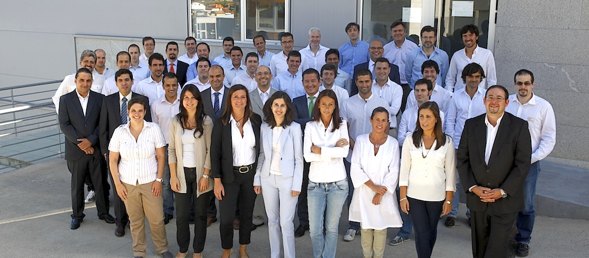
Frontend vs. Backend
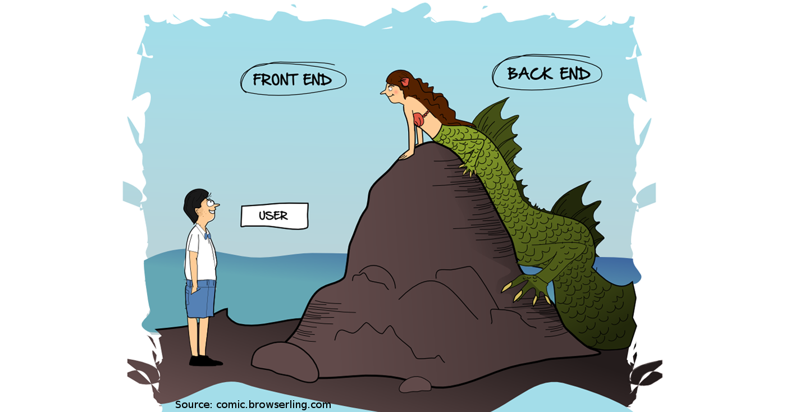
Microservices
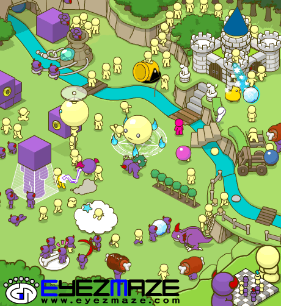
Apache Kafka
Apache Kafka es un proyecto de intermediación de mensajes de código abierto desarrollado por la Apache Software Foundation escrito en Scala.
Fonte: wikipedia
Apache Kafka
El proyecto tiene como objetivo proporcionar una plataforma unificada, de alto rendimiento y de baja latencia para la manipulación en tiempo real de fuentes de datos.
Fonte: wikipedia
Apache Kafka
Puede verse como una cola de mensajes, bajo el patrón publicación-suscripción, masivamente escalable concebida como un registro de transacciones distribuidas, la que la vuelve atractiva para las infraestructuras de aplicaciones empresariales.
Fonte: wikipedia
A miña definición: caixas máxicas
Uso
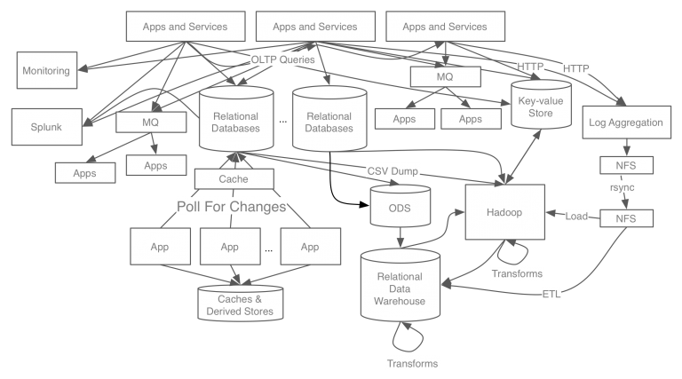
Separar os servicios
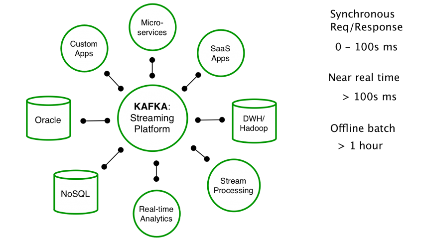
Con Kafka
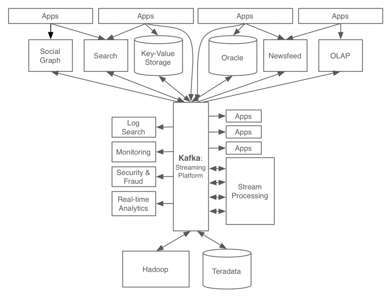
Fonte
Arquitectura
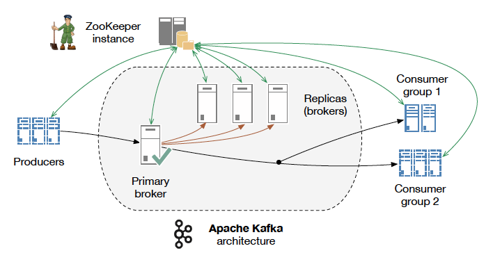
Topic
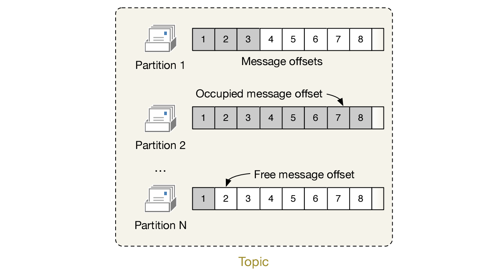
Replication
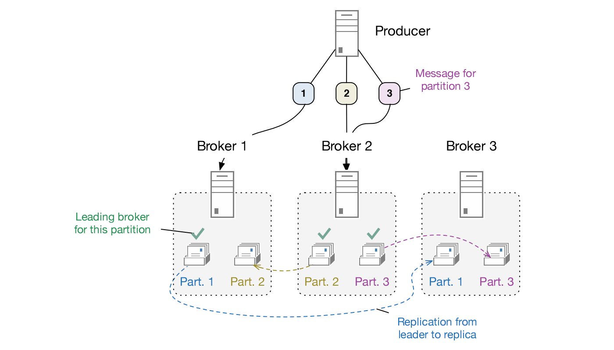
Fonte
Rendemento
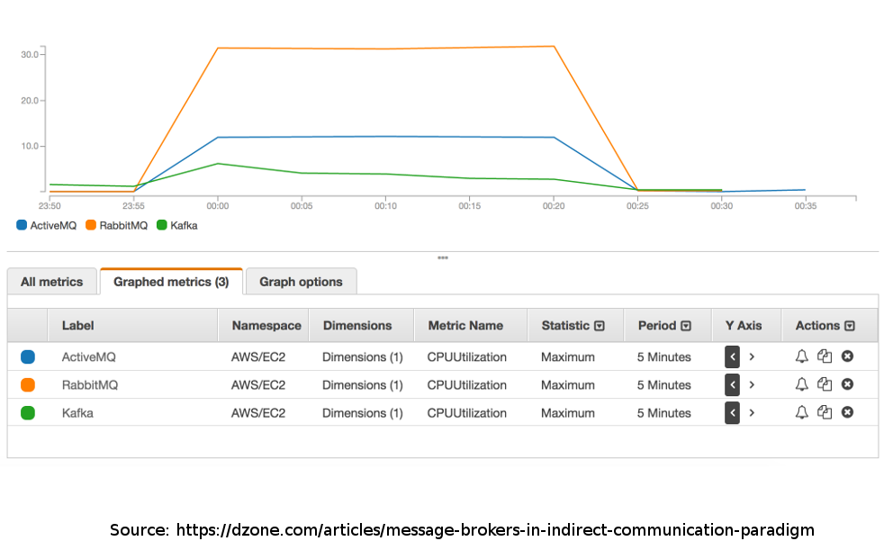
Latencia
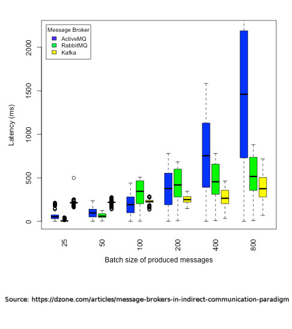
Conectores
|
|
Exemplo: refubot
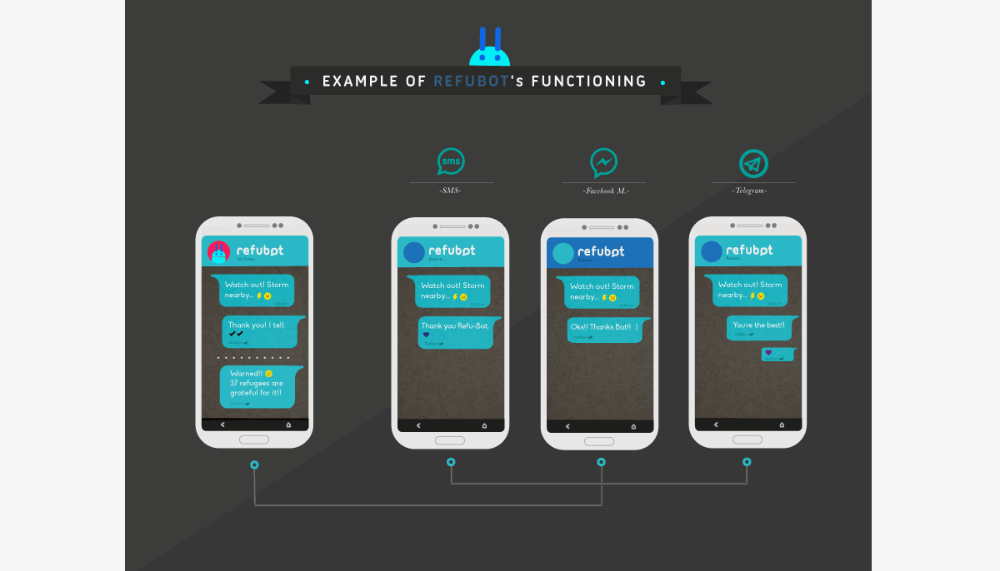
¡Funcionou!
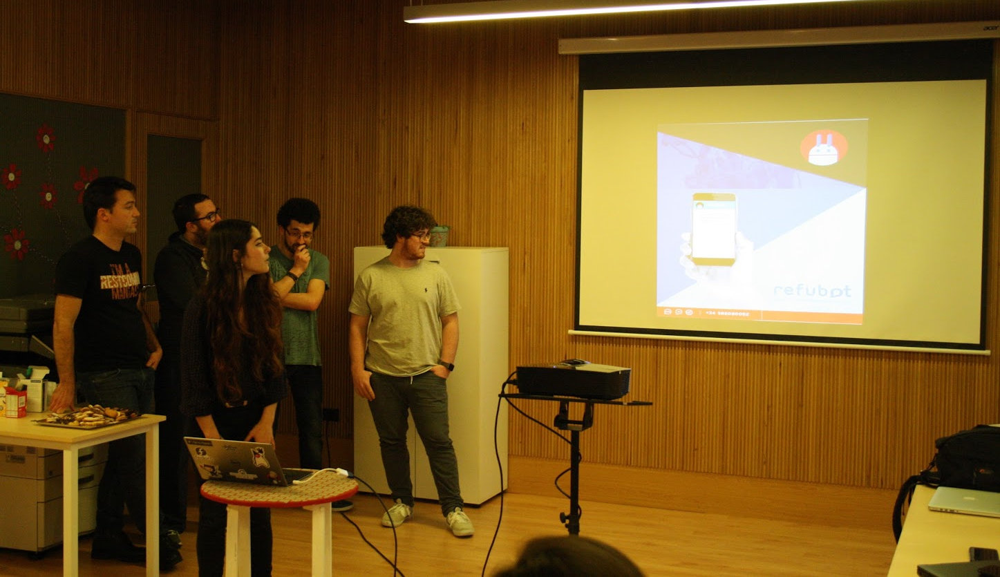
Casos de uso
Algúns exemplos habituais pero é unha ferramenta que soporta moitos usos.
Messaging
Permite desaclopar sistemas tradicionais.
Tamén para coordinar sistemas distribuidos.
Exemplos: refubot, Bluemix, LivePerson.
Website Activity Tracking
Métricas
Agregación de Logs
Demo
Posta en marcha e proba
docker run -p 2181:2181 -p 9092:9092 --name kafka --hostname kafka --env ADVERTISED_HOST=kafka --env ADVERTISED_PORT=9092 spotify/kafka
docker exec -it kafka /bin/bash
$KAFKA_HOME/bin/kafka-topics.sh --create --zookeeper localhost:2181 --replication-factor 1 --partitions 1 --topic example
$KAFKA_HOME/bin/kafka-topics.sh --list --zookeeper localhost:2181
$KAFKA_HOME/bin/kafka-console-producer.sh --broker-list kafka:9092 --topic example
$KAFKA_HOME/bin/kafka-console-consumer.sh --bootstrap-server kafka:9092 --topic example --from-beginningCliente Python
apt-get install python3 python3-dev python3-pip vim
pip3 install kafka-pythonfrom kafka import KafkaProducer
producer = KafkaProducer(bootstrap_servers='kafka:9092')
producer.send('example', b'hello from python')Kafka Streams
A comunicación tradicional (sistemas acoplados)
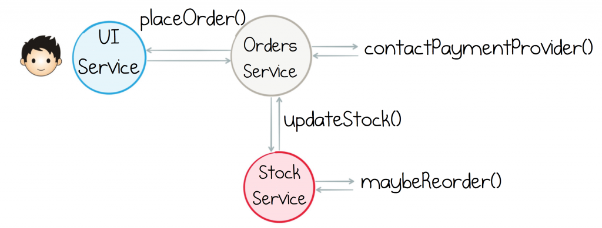
Basada en eventos
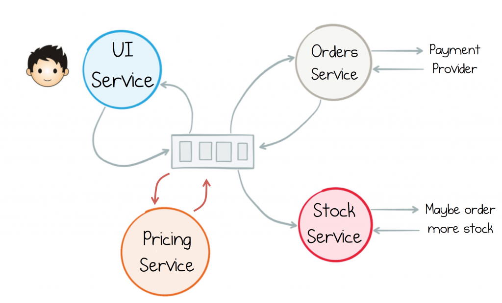
Fluxo de negocio con streams
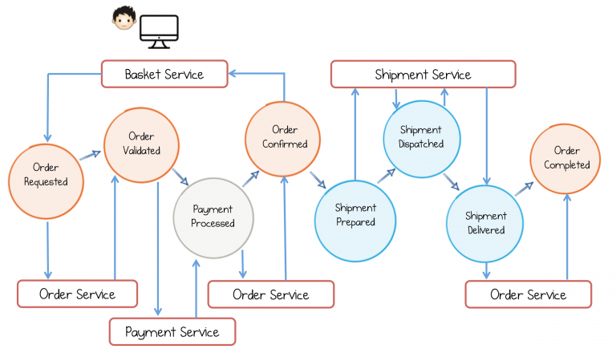
Streams
KStream<String,Purchase> purchaseKStream =
kStreamBuilder.stream(stringSerde,purchaseSerde,"orders")
.mapValues(p -> Purchase.builder(p).maskCreditCard().build())
.to(stringSerde, purchasePatternSerde, "shipments");Fonte
Build Services on a Backbone of Events - Confluent
Resumo
Apache Kafka é doado e aporta vantaxes dende o primeiro minuto.
Kafka Streams habilitan unha nova arquitectura que terá moito éxito.
Moi útil para temas de IoT.
¡Gracias!
Slides: https://antonmry.github.io/talk-vigotech-2017-introduction-to-apache-kafka
Código: https://github.com/antonmry/talk-vigotech-2017-introduction-to-apache-kafka
Documentación Apache Kafka: https://kafka.apache.org/
Tamén podes preguntarme en twitter: @antonmry